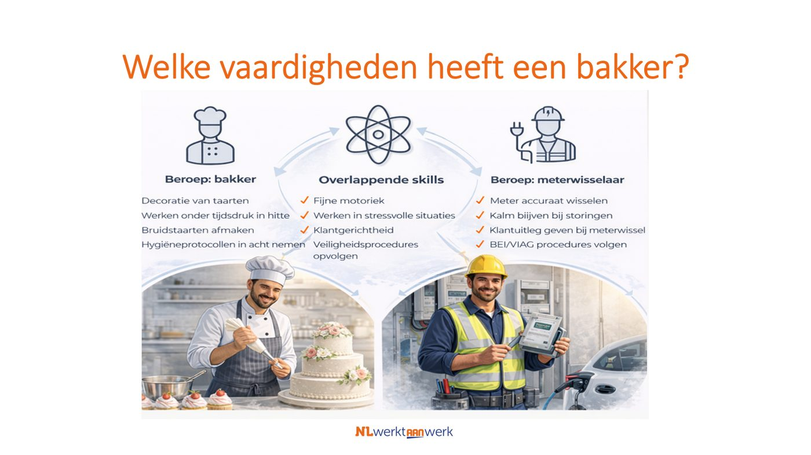

In een krappe arbeidsmarkt vind je niet meer iedereen via het cv. Vandaag leer je breder kijken, naar skills in plaats van diploma's, en ga je naar huis met een concrete, andere blik op je eigen vacature.
Wat kom je halen vandaag? Steek je hand op bij wat voor jou geldt.
Structureel, niet tijdelijk. Vergrijzing, uitstroom en te weinig instroom in cruciale sectoren zoals techniek, zorg en overheid.
Met dezelfde mensen meer werk doen. Technologie helpt, maar alleen als mensen de juiste skills hebben.
Robots, AI en maatschappelijke transities veranderen wat werk inhoudt. Daardoor zijn andere skills nodig, niet morgen, maar nu.
Bespreek met je buurman of buurvrouw:
Eens of oneens? Wat heb je zelf meegemaakt?
Overdraagbare skills zijn vaardigheden die je in het ene beroep leert, maar ook in een heel ander beroep kunt gebruiken. Ze zijn niet gebonden aan een functietitel of sector.

Drie skills die je overal kunt inzetten:
Analyseren wat er mis gaat en een oplossing bedenken zonder handleiding.
Prioriteiten stellen, deadlines bewaken en het overzicht bewaren ook als het druk is.
Duidelijk uitleggen, goed luisteren en verwachtingen managen met klanten en collega's.
Technisch verwante functies (direct overstapbaar, veel mensen beschikbaar)
Indicatie arbeidsmarkt (UWV / CompetentNL): Deze beroepen hebben een grotere werkendenpopulatie dan verspaners. Voorbeeld:
| Beroep | Overlap met verspaner | Waarom kansrijk voor werving |
|---|---|---|
| Productiemedewerker metaal / industrie | Procesmatig werken, nauwkeurigheid, veiligheidsbewustzijn | Grootste instroomgroep in technische sector; vaak geen diploma vereist, makkelijk op te leiden naar verspaner. |
| Machinebediener / operator | Procesinzicht, kwaliteitscontrole, zelfstandig werken | Veel aanwezig in voeding-, verpakkings- of kunststofindustrie; goed te herscholen via CNC-training. |
| Montagemedewerker / assemblagemedewerker | Technisch inzicht, tekening lezen, materialenkennis | Grotere groep, vaak handvaardig en gewend aan productielijnen. |
| Lasser / constructiebankwerker | Materiaalkennis, precisie, veiligheidsbewustzijn | Veel groter volume dan verspaners, maar vaardigheden sterk verwant. |
| Onderhoudsmonteur algemeen | Probleemoplossend vermogen, technisch inzicht | Groeiende groep door energie- en bouwsector; overstap mogelijk bij CNC-ervaring. |
Plak je vacature of functieprofiel. Ontdek wie er nog meer geschikt is.
Naast diploma's vraagt een functie ook om vaardigheden. De Talentradar laat zien welke skills bij jouw vacature horen, wie er nog meer geschikt is, en hoe je een bredere groep kunt aanspreken.
Plak gewoon je vacaturetekst of functienaam in (bijv. "Monteur Elektrotechniek") en de tool doet de rest.
Open Talentradar →Op een cv zie je goed wat iemand heeft gedaan. Wat iemand kan en wil, staat er veelal niet in, dat zit in skills. Daarom kijkt deze analyse naar skills in plaats van alleen naar diploma's of werkervaring.
Zodra je weet welke skills bij de functie horen, kun je de vacaturetekst daarop aanscherpen. Zo spreek je vanzelf een bredere doelgroep aan.
Schrijf maximaal 5 concrete handelingen op. Niet de functietitel, niet het diploma — wat doet iemand op dag 1?
Welke eisen in de vacature zijn eigenlijk niet strikt noodzakelijk? Wat kun je leren op de werkvloer?
Welke andere achtergrond, sector of functie past bij deze 5 dingen? Denk buiten de voor de hand liggende kandidaat.
Daarna presenteert elk groepje kort wat ze hebben bedacht. Wat valt op? Wat verrast je?
Je bereikt mensen die nooit op jouw vacature hadden gereageerd maar het werk prima kunnen doen.
Als je weet welke skills iemand al heeft, weet je ook wat iemand nog nodig heeft.
Functies veranderen door automatisering en AI. Skills blijven overdraagbaar.
Twee tools — direct te gebruiken, gratis
Talentradar
🎯 Talentradar
Voer een beroep in en ontdek welke skills erbij horen en welke andere beroepen matchen. Zo vind je jouw nieuwe doelgroep.
Vacature-herschrijver
✏️ Vacature Herschrijver
Plak je huidige vacature in en krijg direct een skills-gerichte versie terug. Klaar om te plaatsen.
Hulp nodig? Ik kom graag langs — dit cadeau is het begin.